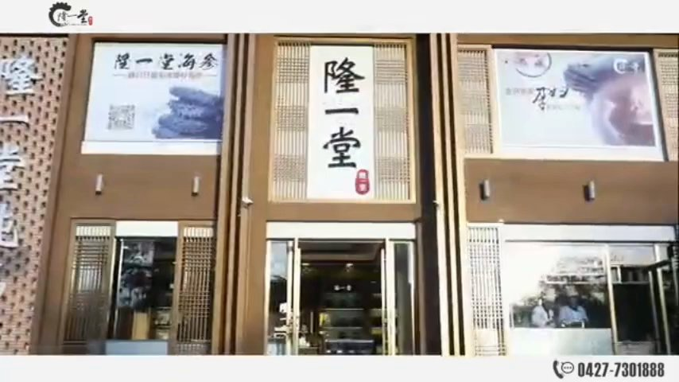
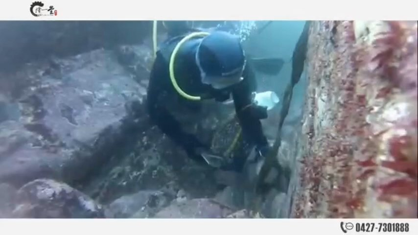
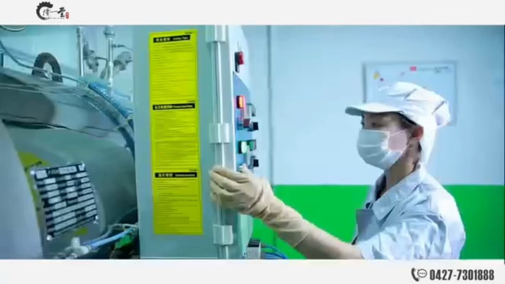

秉承「营养源自天然」的理念，隆一堂在辽参故乡——辽宁大连长海承包海域，坚持深海人工捕捞，只选个头大、年份足的成参；同时在广东潮州以现代化工艺精制高品质燕窝，每一件产品从源头到终端全程可溯。
招牌辽参来自北纬39°深海，臻品燕窝产自广东潮州，覆盖商务礼赠、家庭滋补与全球批发。
辽宁大连长海县地处黄海北部北纬39°，水温低、盐度高、潮流急，辽刺参生长周期长，肉质紧实、营养丰富。隆一堂在此承包海域，深海人工捕捞，只选个头大、年份足的成参，一手直供。


从原料验收、清洗处理、蒸煮炖制、烘干锁鲜，到质检分级与冷链包装，每一批产品都在标准化车间内完成全流程把控。
无论您是经销商、零售商、企业礼赠采购还是电商卖家，我们都提供灵活的合作方式：大宗批发、OEM 贴牌、礼盒定制、一件代发。留下询盘，招商团队 24 小时内回复。
招商热线：175 4276 3058